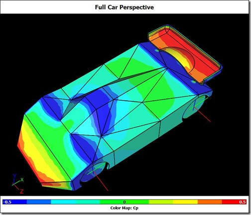

Kyosho Mini-Z RC model racecars are 1/27 scale and race at speeds up to 10 m/s. Fernando Freitas races them as a hobby and was wondering about the effect of aerodynamics on his car's performance. Fernando was aware of Computational Fluid Dynamics (CFD) and thought it might help him satisfy his curiosity. At the same time Fernando came across Caedium Professional and, with a free 30-day trial, set to work. Fernando remarked:
"I found it [Caedium] to be extremely useful and easy to use."
Mini-Z RC Model Caedium CFD Simulation: Image courtesy of Fernando Freitas